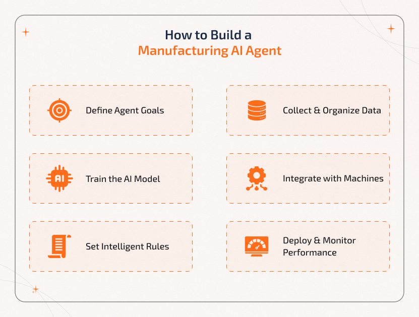
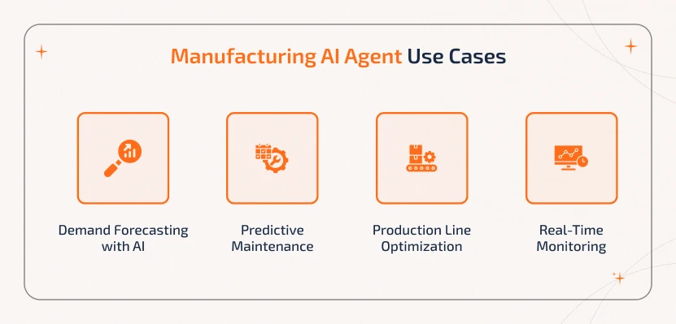
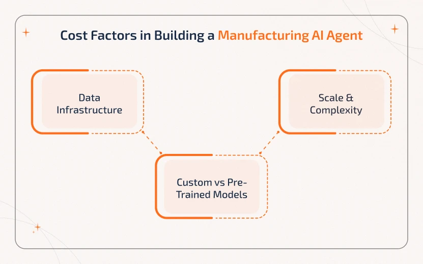

Manufacturing AI agents are transforming industries and turning operations into smarter, faster, and efficient. Thus, knowing how to build a manufacturing AI agent, from defining its purpose to deploying it in the factory, is essential to staying ahead of the competition.
These agents are not just the future but are already changing the way manufacturers work. From reducing downtime to improving efficiency, they are helping businesses stay competitive.
In this guide, we will walk you through how to plan, design, and deploy your own AI agent tailored for manufacturing sectors. They work great for predictive maintenance, supply chain efficiency, and production line optimization. As more and more factories are shifting towards proactive, data-driven operations, manufacturing AI agents are becoming the key part of staying competitive and future-ready.
Manufacturing AI agents are nothing but smart, autonomous systems that help business owners streamline production on the go. You may think of it like this: it uses AI to monitor operations, make better decisions, and improve efficiency without requiring human intervention.
1. With the help of sensors and industrial IoT systems, they monitor live machine data. They also keep track of performance 24/7.
2. AI-powered defect detection in these AI agents helps find faults and inefficiencies at an early stage. This helps businesses prevent costly breakdowns.
3. They support making intelligent decisions by adjusting processes, rerouting tasks, and triggering maintenance alerts.
With intelligent agents for manufacturing becoming more advanced, they are becoming the most essential tool for factories looking to stay competitive in the fast-evolving industrial landscape.
Need for AI Agents in Manufacturing
In the fast-paced digital world powered by AI agents, manufacturing industries are witnessing transformations. Whether you prefer saving time, cutting down costs, or making your operations smooth, investing in AI agents for your business is worthwhile.
Check out why AI agents are helping factories become smarter, faster, and more efficient:
1. AI agents used in production line optimization help find slowdowns effortlessly and keep things moving smoothly.
2. In supply chain management, AI agents are used to track delays, plan efficiently, and reduce waste.
3. With AI agents in warehouse automation, inventory handling is made easy and requires no manual work.
4. By connecting AI to older systems through AI integration with PLCs, legacy machines can work smarter.
Above all, AI agents provide real-time monitoring support, so you’ll know exactly what’s happening—no guesswork required.
AI Agents' Role in Manufacturing – Things to Be Considered Beforehand
Just before getting to building, it is important to get a clear view of what your manufacturing AI agent needs to do. Whether you prefer to save time or budget, planning ahead will work. This ensures your agent aligns with your goals, infrastructure, and long-term manufacturing strategy.
To find what your agent should do exactly, you should start asking:
1. Do you want your agent for predictive maintenance or to find issues before they cause downtime?
2. Is your goal AI-based demand forecasting, or should it handle robotic control and machine operations?
3. Do you want it to interact with IIoT sensors or run as an edge AI for manufacturing devices on-site directly?
By answering all these questions, you are defining your role and will get a better idea of what you need in your agent, i.e., whether cloud-based, on-premise control, or fully autonomous agents in factories that make decisions on their own.
How to Build a Manufacturing AI Agent - A Step-By-Step Guide
The following section will help you build a manufacturing AI agent step-by-step. Whether you are an engineer, a factory manager, or want to know about AI in manufacturing, the step-by-step guide will help you build an agent easily.

Step 1: Define the AI Agent Functionality
Start by choosing what you want your agent to do. For instance, you should define the agent in terms of:
- Finding defects on the production line
- Improving how things move through the factory
- Helping robots work together better
Step 2: Gather & Organize Data
Once you’ve defined the agent, the next step is to collect the right kind of data from sensors, cameras, or machine logs. Then, organize and label it so the AI can learn from the data collected.
Step 3: Train Your AI Agent
By using the collected data, you should teach your AI how to spot patterns or problems. You can even train it to identify things like faulty parts or unusual machine behavior.
Step 4: Connect to Machines
When the agent is well-trained, you should proceed to link it to your factory's equipment using IoT devices or PLCs. With this, the agent can send and receive data in real-time.
Step 5: Add Smart Rules
Now, you should set up rules and make your AI agent understand what to do when it finds something. For instance, send an alert, stop a process, or slow down a machine, etc.
Step 6: Launch & Monitor
As a last step, you should run your agent on a device near your machines or on the cloud. For this, you should use a simple dashboard to keep track of how it is performing.
With this, you can create AI in manufacturing automation and use AI for production line optimization to make operations faster and more reliable.
Follow our complete guide to launch a manufacturing-ready AI agent today.

Manufacturing AI Agents Use Cases
Manufacturing AI agents are used to boost efficiency and cut down costs. Some of the real-world examples include:

1. AI-Based Demand Forecasting
AI agents help you buy smarter by predicting which materials or parts you will need. This helps you avoid overstocking and waste less.
2. Predictive Maintenance AI
Agents will keep track of machine health and alert you beforehand. It not only saves your time but also prevents costly downtime.
3. AI for Production Line Optimization
By analyzing your workflows, AI agents spot delays or inefficiencies and are specifically useful in discrete manufacturing setups.
4. Real-Time Monitoring with AI Agents
AI agents identify and flag performance issues and unusual behavior using real-time data from machines and sensors.
Blueprints for AI Agents Across Manufacturing Verticals
In today's world, manufacturing industries are diverse, and so the roles of AI agents differ. The examples of how intelligent agents for manufacturing are changing specific industries are as follows:
| Industry | Use Case Example |
|---|---|
| Automotive | Detecting chassis weld defects via computer vision |
| Electronics | Real-time SMT line error correction with edge AI |
| Pharma | Ensuring GMP compliance in batch records |
| Textiles | AI-powered pattern uniformity & finding defects |
| Food & Beverage | Shelf life prediction using temperature sensors |
Cost of Building A Manufacturing AI Agent
If you aren't sure how much it costs to build an AI agent for manufacturing, then this section will give you a clear overview.
Before getting in, you should get to know the things that affect the cost. This includes:

1. Data Infrastructure – Higher the cost when it comes to more sensors, storage, and real-time data handling.
2. Custom Vs Pre-Trained Models – Building tailor-made AI models costs more, but it fits your use case better than pre-trained models.
3. Scale & Complexity – The cost will be higher if you are deploying across an entire factory rather than automating one process.
The price of a Manufacturing AI agent can vary based on the approach you choose and requirements:
- $1,000 – $10,000 on using open-source tools + DIY setup.
- $10,000 – $50,000 per year upon using a vendor platform.
- $50,000 and up when you partner with an AI development company.
To build a scalable and reliable solution, you shall partner with a trusted AI agent development company to speed up things and reduce risks.
Explore what impacts AI agent pricing & find the right build strategy for your factory.
Challenges & Best Practices for Manufacturing AI Agents
It is indeed vital to understand the difficulties in building an AI agent for manufacturing industries and how to overcome them.
Challenges in Building Manufacturing AI Agents:
- Lack of clean or reliable sensor data
- Compatibility issues with legacy PLC systems
- Resistance to adopting automation
Best Practices to Follow:
- Start small. Prototype on a single line before scaling
- Choose AI platforms with edge deployment for faster results
- Integrate with existing MES/ERP systems to ensure smooth operation
Advantages of an AI Agent Over a Chatbot in Manufacturing
You may wonder why not use a basic chatbot rather than a more advanced AI agent in manufacturing. Get to know how Chatbot Vs AI Agent matters in the tabular form:
| Chatbot | AI Agent |
|---|---|
| cost-factors-in-building_a-manufacturing-ai-agent | Takes real-world actions & makes decisions |
| Reactive | Proactive. Autonomous in its operations |
| No hardware integration | Works with both factory hardware & software systems |
Chatbots help humans with assisting through conversations, while AI agents in manufacturing monitor, optimize, and control the production process on their own.
AI agents deliver smarter automation and lower manufacturing costs.
Why Choose Sparkout Tech to Build Manufacturing AI Agent?
At Sparkout Tech, we not only build bots, rather we also create intelligent systems that power factories of the future. Things that set us apart include:
1. Expertise in building AI agents for industrial IoT systems and machine learning in manufacturing.
2. We design custom-built AI agent platforms that handle predictive maintenance AI to warehouse automation solutions from scratch.
3. The AI agents we develop comply with global standards like GDPR and scale with your business operations.
4. From edge AI to AI integration with PLCs, we bring digital and physical layers together seamlessly.
No matter if you are launching the first manufacturing AI agent or scaling to multiple lines, we at Sparkout Tech build smarter and faster solutions.
Conclusion
With factories moving towards 5.0, building a manufacturing AI agent is a strategic investment. Whether for production line optimization, supply chain forecasting or predictive maintenance, these agents are helpful for smart decision-making.
At Sparkout Tech, we deliver tailored, scalable AI solutions that boost efficiency and cut costs.